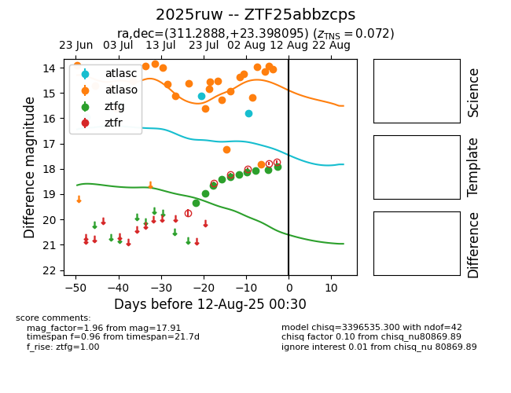

Target 2025ruw at 2025-08-12 22:03, see:
FINK: fink-portal.org/2025ruw
Lasair: lasair-ztf.lsst.ac.uk/objects/2025ruw
ALeRCE: alerce.online/object/2025ruw
TNS: wis-tns.org/object/2025ruw
YSE: ziggy.ucolick.org/yse/transient_detail/2025ruw
alt names
ZTF25abbzcps (ztf,fink)
2025ruw (tns,yse)
coordinates:
equatorial (ra, dec) = (311.2888,+23.39810)
galactic (l, b) = (67.3336,-11.99227)
photometry
last atlasc=15.79, atlaso=15.42, ztfg=17.95
4 atlasc, 27 atlaso, 11 ztfg detections
